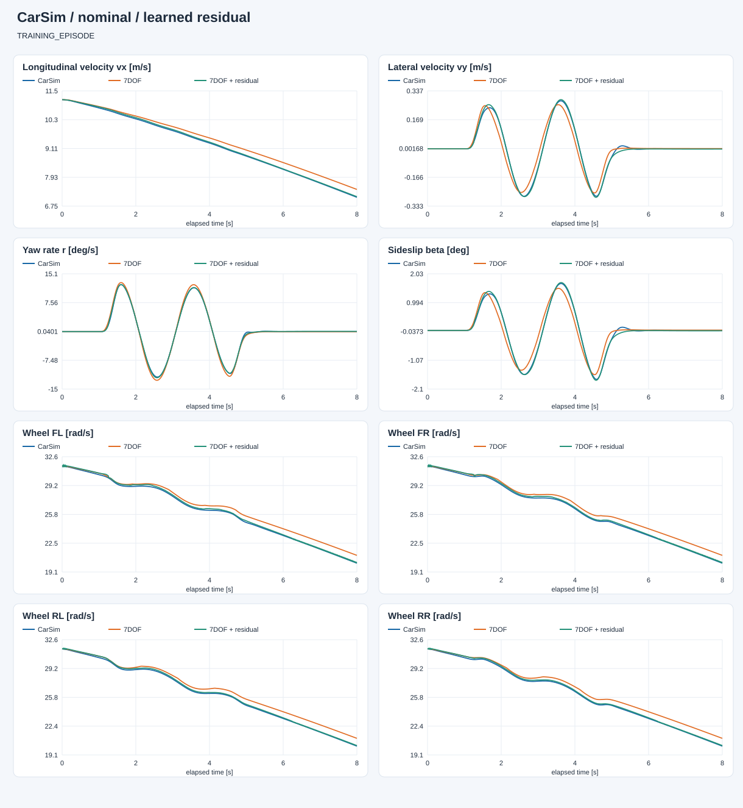
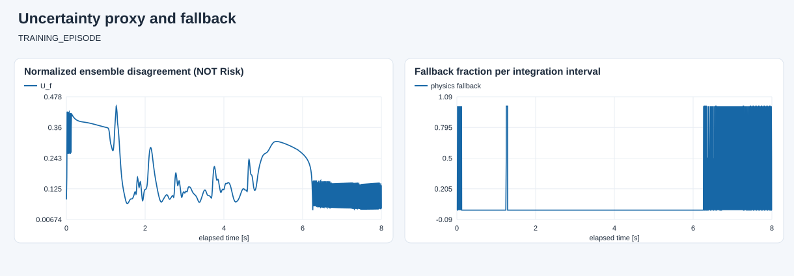

E:\modelcodeE\DRL_MPC\DRL_MPC\carsim_rl\artifacts\dynamics7dof\open_loop_20260927_233218_823895\capture
数据角色：TRAINING_EPISODE。 蓝色为 CarSim，橙色为原模型，绿色为学习补偿。两种模型都只初始化一次，不重置到真值。 共同有效覆盖率：100.0%。训练回合改善不等于泛化；已用于设计修改的开发对照回合也不是独立验证。 未接管控制、未生成 Risk 标签；高分歧/超范围回退只是工程防护，不是安全证明。

| 状态 | 原模型 RMSE | 补偿 RMSE | 原模型 MAE | 补偿 MAE |
|---|---|---|---|---|
| vx_m_s | 0.21663974308016823 | 0.03433813843369022 | 0.1958743959480904 | 0.03201744828988983 |
| vy_m_s | 0.03375550186978767 | 0.00726575824088227 | 0.022074496917837864 | 0.004519106867706134 |
| yaw_rate_rad_s | 0.0075000159632773 | 0.001993020621045438 | 0.004817065957650614 | 0.0012242435160946517 |
| omega_fl_rad_s | 0.6005861541712672 | 0.1328496293838696 | 0.532459630728991 | 0.12194307528126241 |
| omega_fr_rad_s | 0.5964523384829928 | 0.1319824874050926 | 0.5309699453031106 | 0.12274127856321204 |
| omega_rl_rad_s | 0.5966944094500278 | 0.11365584724293591 | 0.5301114491523314 | 0.10651141914015529 |
| omega_rr_rad_s | 0.5930437275594103 | 0.11490076661880369 | 0.5284052921008556 | 0.10835243564092754 |
转向前、正弦输入期间、转向结束 0.5 s 后分别统计；末段不保证已经达到平衡。
| 阶段 | 状态 | 样本 | 原模型 | 补偿 |
|---|---|---|---|---|
| before_steering | vx_m_s | 900 | 0.037211248594000546 | 0.025305001976497914 |
| before_steering | vy_m_s | 900 | 6.421090618158828e-16 | 3.3832323134600053e-16 |
| before_steering | yaw_rate_rad_s | 900 | 2.675408617364025e-16 | 3.2353069306155687e-16 |
| steering_active | vx_m_s | 4000 | 0.17156941118686447 | 0.043023763419710544 |
| steering_active | vy_m_s | 4000 | 0.04714772305143092 | 0.006865323890351324 |
| steering_active | yaw_rate_rad_s | 4000 | 0.010404916058036557 | 0.0025239517802450456 |
| after_steering_plus_0p5s | vx_m_s | 2500 | 0.29604013672845886 | 0.020452671767186282 |
| after_steering_plus_0p5s | vy_m_s | 2500 | 0.00203554637175089 | 0.0017503365389370477 |
| after_steering_plus_0p5s | yaw_rate_rad_s | 2500 | 0.0005026136618836364 | 0.0009375507176288968 |

连续积分平均回退比例：0.03436708860759494；与实测状态上的逐点诊断回退比例不是同一指标。
完整指标见 evaluation.json。低网络分歧不保证低真实误差，尚未完成不确定性校准。